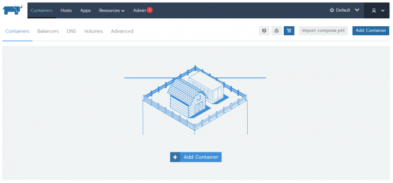

Disponível Beta da Versão 2.0 do Rancher - Comece a testar agora
Blog Review ToolsCompartilhe esse post nas redes sociais...
Olá Homelabers,
Uma das minhas metas para esse ano é me tornar proficiente em Docker e Kubernetes. E por isso, venho estudando bastante sobre essas tecnologias.
O Rancher é um painel de controle e gerenciamento para sua infraestrutura de containers. Eu já falei sobre Rancher aqui no blog, em uma série de 3 posts bem bacana.
E hoje vou falar sobre a versão 2.0 do Rancher que entrou em beta oficial.
Construído com base no Kubernetes, o Rancher 2.0 fornece um único ponto de gerenciamento para qualquer cluster Kubernetes em execução, independentemente de onde ele for executado. Você pode implantar novos clusters com o Rancher em qualquer host, lançar clusters hospedados na nuvem no Google, Azure ou AWS e importar facilmente os seus clusters existentes. Trouxemos a interface intuitiva e a facilidade de uso do Rancher para o Kubernetes.
O Rancher 2.0 é uma plataforma empresarial do Kubernetes que permite gerenciar todas as distribuições do Kubernetes, todos os clusters do Kubernetes, em todas as nuvens.
O Rancher 2.0 tem três componentes principais:
* Mecanismo de Kubernetes Rancher (Rancher Kubernetes Engine - RKE),
* Gerenciamento de Cluster Unificado (Unified Cluster Management) e
* Gerenciamento de Carga de Trabalho (Workload Management).
Mecanismo de Kubernetes Rancher - Rancher Kubernetes Engine - RKE
1. **Instalador do Kubernetes Simplificado**. O Rancher 2.0 incorpora o RKE para instalar clusters do Kubernetes em clusters do VMware vSphere, servidores bare-metal e provedores de nuvem que ainda não suportam um serviço gerenciado do Kubernetes.
2. **Operações Simplificadas do Kubernetes**. O Rancher suporta operações contínuas de clusters Kubernetes, incluindo, por exemplo, atualização de cluster e backup etcd.
3. **Servidor Rancher HA**. O Rancher 2.0 pode ser instalado em um cluster existente do Kubernetes, que pode ser um pequeno cluster RKE criado com o único propósito de executar o servidor Rancher.
Gerenciamento de Cluster Unificado - Unified Cluster Management
1. **Clusters e gerenciamento de nós (Clusters and Node Management)**. O Rancher suporta a capacidade de provisionar clusters do Kubernetes hospedados por um provedor de nuvem (GKE, AKS e, em breve, EKS), criados usando RKE ou importados de um cluster existente que você já possui.
2. **Autenticação**. O Rancher suporta autenticação local, Github e AD / LDAP para todos os clusters GKE, AKS, EKS, RKE e importados.
3. **Gerenciamento de usuários**. O Rancher suporta dois tipos de usuário padrão, admin e usuário, e a capacidade de definir tipos de usuários personalizados.
4. **Controle de Acesso Baseado em Função (RBAC)**. - O Rancher permite que você crie suas próprias funções de cluster globais que podem ser facilmente atribuídas a qualquer usuário para gerenciar clusters e projetos do Kubernetes. O Rancher inclui todas as funções do Kubernetes prontas para uso e a capacidade de personalizar suas próprias funções. Cada função personalizada pode ser atribuída em nível global, de cluster ou de projeto.
5. **Gerenciamento de Projetos e Namespace**. - Os usuários podem criar namespaces e atribuí-los a projetos. Projetos são um novo conceito do Rancher que permite agrupar um conjunto de namespaces e atribuir um conjunto de permissões de usuário a esses namespaces.
6. **Políticas de segurança de Pods**. O Rancher 2.0 permite que os usuários criem suas próprias políticas ou políticas de segurança de pods que podem ser aplicadas a funções.
7. **CLI do Rancher**. O CLI suporta todos os principais conjuntos de recursos do Rancher 2.0.
Gerenciamento de carga de trabalho - Workload Management
1. **Interface de carga de trabalho (Workload UI)**. O Rancher está introduzindo uma nova UI de carga de trabalho (workloads) que permitirá aos usuários aproveitar a simplicidade da interface do usuário do Rancher para criar e gerenciar suas cargas de trabalho do Kubernetes.
2. **Suporte ao Catálogo de Helm**. O catálogo do Rancher 2.0 é construído em Helm charts.
3. **Gerenciamento de alertas**. O Rancher 2.0 utiliza o **AlertManage**r do Prometheus para enviar alertas de nível do sistema e do usuário para vários sistemas (incluindo o Slack, Email, PagerDuty e Webhooks.)
4. **Logging**. O Rancher 2.0 utiliza o Fluentd para coletar a saída stdout / err ou os logs gravados em diretórios específicos. Uma variedade de destinos de log podem ser utilizados, incluindo ElasticSearch, Splunk, Syslog e Kafka.
5. **Pipelines CI / CD**. O Rancher 2.0 inclui um recurso de pipeline integrado simples que permite aos usuários criar pipelines dentro de projetos para integração contínua.
Migração do Rancher 1.6 para 2.0
De acordo com o anúncio oficial, o Rancher 2.0 foi totalmente reescrito para suportar a plataforma Kubernetes.
O Rancher 2.0 vai suportar apenas os modelos YAML do Kubernetes e ferramentas e melhores práticas para migração da versão 1.6 serão desenvolvidas para ajudar a comunidade que usa Catle a migrar para o Kubernetes. O suporte ao Rancher 1.6 vai durar por pelo menos mais um ano.
O Rancher 2.0 está previsto para ser lançado oficialmente no final de Abril de 2018.
Instalando o Rancher 2.0
Gostou da notícia e quer testar a versão 2.0 do Rancher?
A instalação da versão Beta do Rancher 2.0 é muito simples e requer apenas 2 passos:
1: Configuração Host Linux com Docker Prepare um host Linux com o Ubuntu 16.04 64 bits, com pelo menos 4 GB de memória.
Instale o Docker no host, as versões suportadas do Docker são 1.12.6, 1.13.1 ou 17.03.2.
2: Iniciar do servidor do Rancher Para instalar e executar o servidor Rancher, execute o seguinte comando do Docker no seu host:
$ sudo docker run -d --restart=unless-stopped -p 80:80 -p 443:443 rancher/server:preview
Em menos de um minuto o Rancher estará iniciado e a UI pode ser acessada em https:// . Uma vez que o Rancher foi instalado com sucesso, a interface do usuário irá guiá-lo através da adição de seu primeiro cluster.

Meet-Up Online - Managing Workloads on Kubernetes with the Rancher 2.0 Beta
E para finalizar, no próximo dia 11 de abril às 14:00hs (de Brasília) vai acontecer um Meet-Up Online sobre essa nova versão. Para participar, basta se cadastrar no link http://info.rancher.com/april-2018-online-meetup
O Rancher 2.0 já está disponível na versão Beta, e os usuários notarão uma tonelada de novos recursos que realmente melhoram como os usuários implantam e gerenciam seus aplicativos. Neste encontro, vamos percorrer como implantar aplicativos no Rancher 2.0, bem como usar os novos recursos de monitoramento, registro e pipeline.
Durante o Meetup, estaremos demonstrando o novo Beta, incluindo todos os recursos no nível do usuário. Os co-fundadores do Rancher Darren Shepherd (@ibuildthecloud) e Shannon Williams (@smw355) discutirão e demonstrarão:
* Implantando aplicativos do Kubernetes no Rancher
* Automatizando o gerenciamento de log
* Configurando Monitoramento e Alertas
* Usando o Catálogo do Rancher com Helm
* Usando o pipeline Rancher.
Como sempre, todas as demonstrações serão ao vivo. Nós responderemos a todas e quaisquer perguntas que você possa ter sobre contêineres, Kubernetes e Rancher! Registre-se agora para o seu link pessoal para o encontro.
Detalhes:
Data: quarta-feira, 11 de abril de 2018 Horário: 1:00 PM (horário da costa leste dos EUA)
Mais informações sobre a instalação em: https://rancher.com/quick-start/
Mais detalhes sobre o Rancher 2.0 podem ser encontrados no Guithub https://github.com/rancher/rancher/wiki/Rancher-2.0
Compartilhe esse post nas redes sociais...Valdecir Carvalho
Nerd e pai orgulhoso da Mariana e João. Profissional Sênior de TI com foco em arquitetura de infraestrutura e cloud computing. Blogueiro, podcaster, palestrante, amante de comunidades técnicas, fotógrafo aposentado e adora jogos antigos.
#vExpert · #VMUGLeader · #VUGBrasil · #vBronwBagBrasil · #VeeamVanguard